{kind=link}
白い城は、現代の入口
まず目に入る建物は歴史記念館・展望塔として整備されたもの。ここから、地形と遺構を読む旅が始まります。
特別動画
1584年、羽柴方は徳川家康の本拠・岡崎を狙いました。その道中にあったのが、丹羽氏の岩崎城。天守ではなく、土塁、空堀、土橋で大軍の速度を奪った城として物語をたどります。
岡崎を狙う軍勢。
道中にあった岩崎城。
城は落ちるが、時間を奪う。
その遅れが、長久手へつながったと伝わる。
Start From Today
岩崎城址公園に立つ白い城型の建物は、日進市民に親しまれている現在の入口です。一方で、戦国時代の岩崎城を考える時に見たいのは、建物そのものよりも、その下に残る丘、空堀、土塁、土橋です。
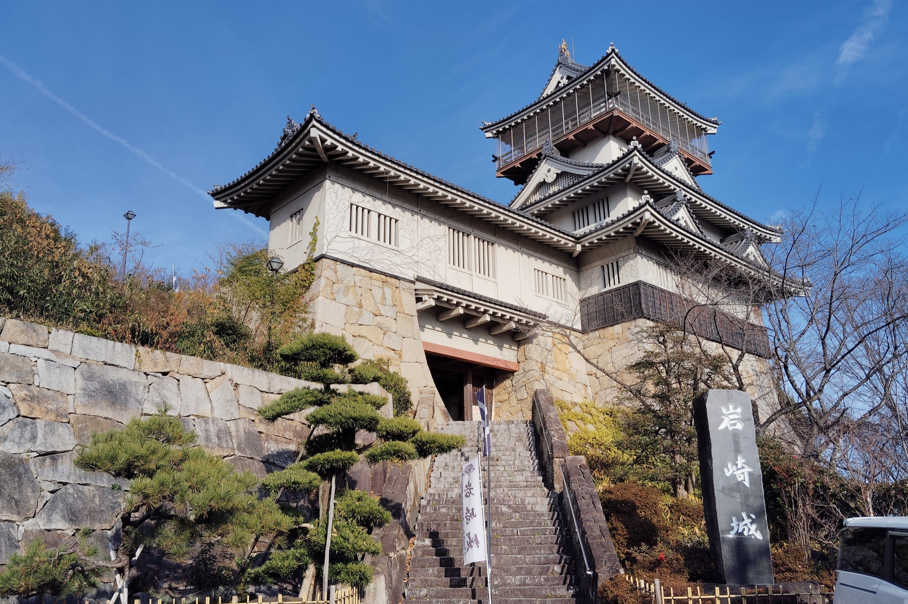
まず目に入る建物は歴史記念館・展望塔として整備されたもの。ここから、地形と遺構を読む旅が始まります。
空堀、土橋、櫓台は、戦国の城がどう守られていたかを体感できる場所です。
本丸跡には6世紀前葉と推定される古墳も確認されています。岩崎城は、何層もの歴史が重なった丘です。
現在の岩崎城3D
複数の公開写真をもとに、石垣、階段、白壁、長い棟、上部の展望塔を読み取れるように整理した外観模型です。実測復元ではなく、現地で見るポイントを直感的につかむための3Dです。
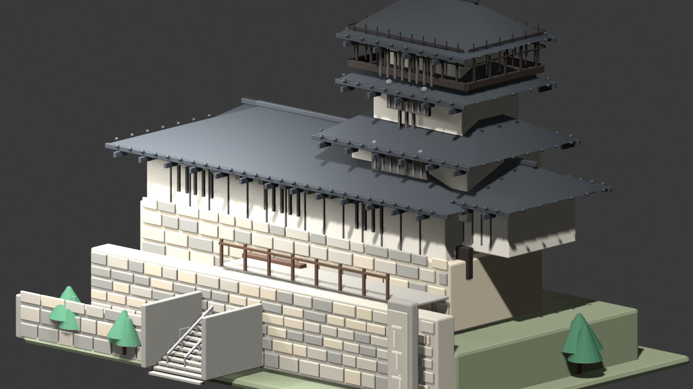
階段と石垣を入れることで、いまの城址公園に立った時の見上げる感覚をつかめます。
写真で目立つ白壁、連続する屋根、縦格子の窓を整理して、現在の岩崎城らしさを出しています。
上層の張り出しと展望部分を立体化し、現在のシンボルとして見える姿を補助します。
What This Castle Was
尾張国の東端、三河へ向かう道筋を押さえる場所にありました。城下に残る「市場」の地名は、交易の場だった可能性を示します。
中世城郭らしい防御の主役は、石垣ではなく土でした。空堀、土橋、櫓台が侵入路を絞り込む構造を作ります。
16世紀前半から約60年、日進周辺の土豪・丹羽氏が岩崎城を拠点にしました。小牧・長久手では徳川方に属します。
本丸跡には6世紀前葉と推定される古墳の遺構も残ります。戦国の城より前から、この丘は地域の重要な場所でした。
Then And Now
岩崎城の面白さは、現在のわかりやすい外観と、戦国期の土の城としての姿が重なっているところです。写真で入口をつかみ、再現イラストで当時の地形を想像します。
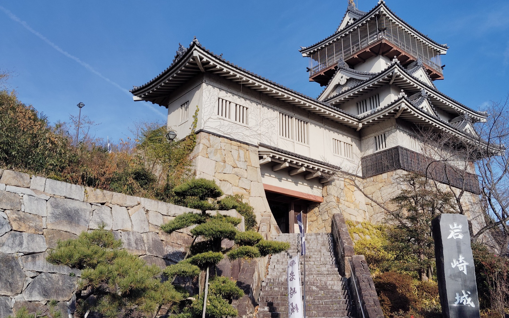
Market Road
岩崎は尾張と三河を往来する道の要衝で、城下に「市場」の地名が残ると説明されています。大きな都市ではなく、農産物、陶器、日用品、旅人が行き交う小さな交易の場として想像すると、この城の役割が見えてきます。
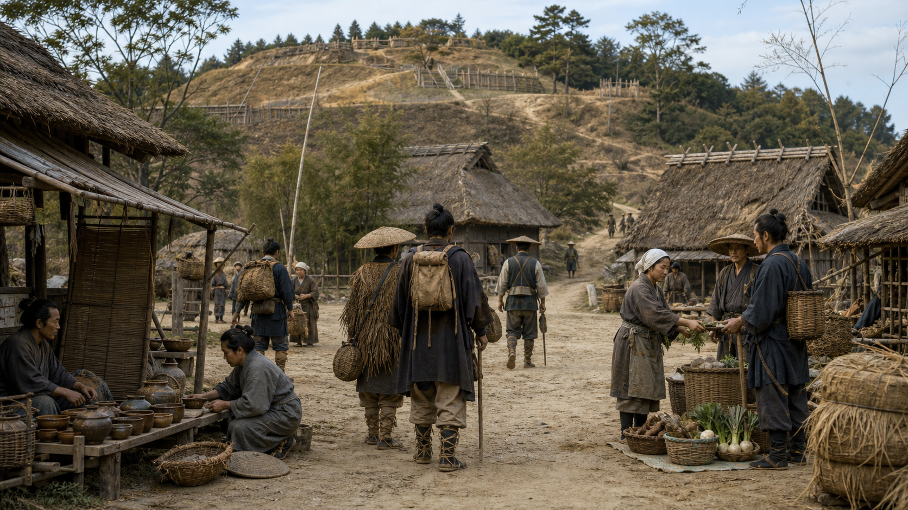
Time Layers
Komaki-Nagakute Campaign
断定しすぎずに言えば、岩崎城の抵抗は、羽柴方の三河中入軍を止める要素の一つになりました。ここから長久手での決戦につながります。
犬山方面から別働隊が出て、家康の本拠に近い岡崎方面へ向かいます。
進路上の岩崎城が抵抗。ここでの足止めが、長久手での決戦につながったと伝わります。
小牧山から追撃した徳川方が、長久手周辺で羽柴方とぶつかります。
模式図です。実際の距離や方角を正確に示す地図ではなく、作戦の流れを理解するための図です。
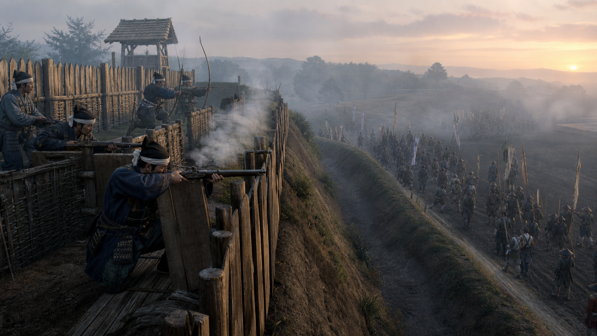
小牧山でのにらみ合いを破るため、三好秀次、池田恒興、森長可、堀秀政らの別働隊が岡崎方面へ向かいます。
城主・丹羽氏次は徳川方の軍に加わり、城は弟の氏重らが守っていたと説明されます。
岩崎城側は壊滅したと伝えられます。しかしこの足止めが、徳川方の追撃と長久手決戦へつながったとされています。
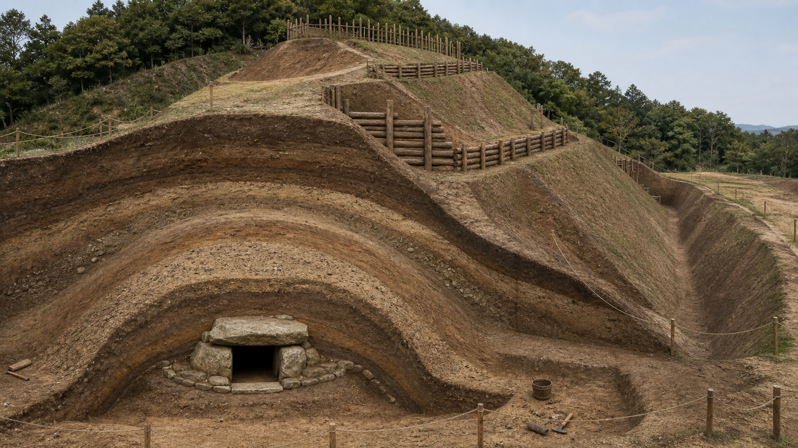
Layers Of The Hill
本丸跡の古墳、空堀の改修、櫓台、井戸跡、礎石建物など、岩崎城は発掘成果からも語れる場所です。「古墳の丘が、戦国の防御拠点になり、いまは市民が歩ける公園になった」と見ると、身近な場所が立体的に見えてきます。
How To Enjoy
道が狭いほど、守る側が有利になる。土橋と櫓台を使えば、防御構造を体感的に説明できます。
岩崎城の守備兵は200余名とも伝わります。数で圧倒される城が、なぜ戦局に関わったのかを想像できます。
丹羽氏重の言葉や家康の評価は魅力的な伝承です。出典をたどると、歴史の面白さがさらに深くなります。
引用・参考リンク
下の小さな画像は、参照した資料の所在を示すための引用用サムネイルです。本文は各資料を読み、要点を自分の言葉で整理しています。詳しい原文・図版はリンク先で確認してください。
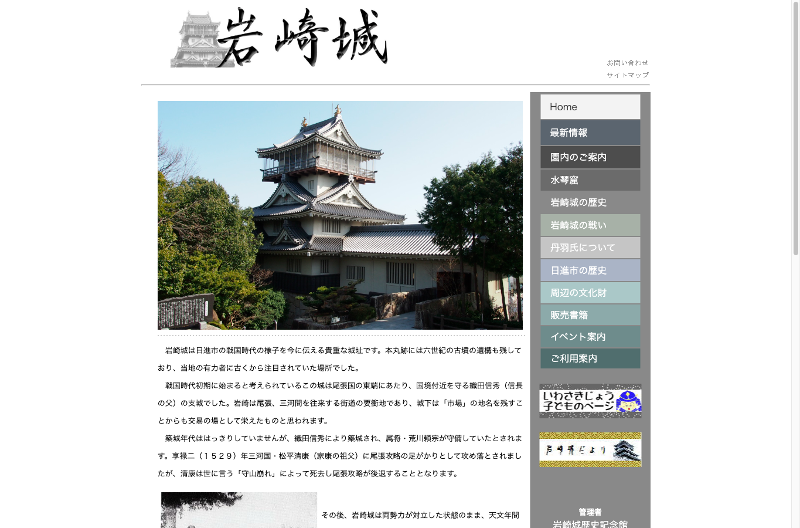
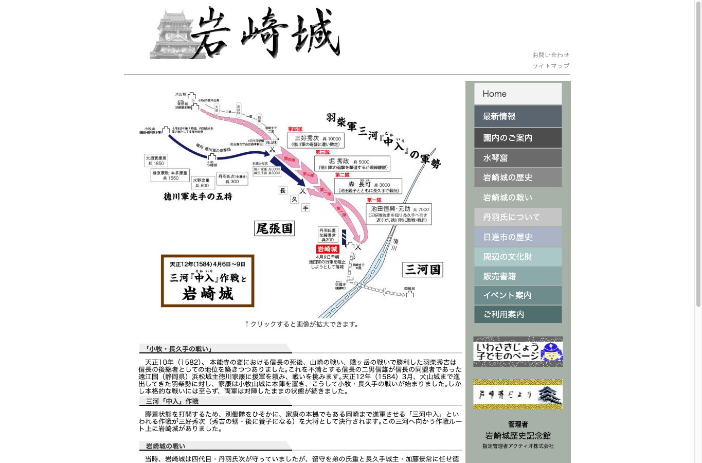
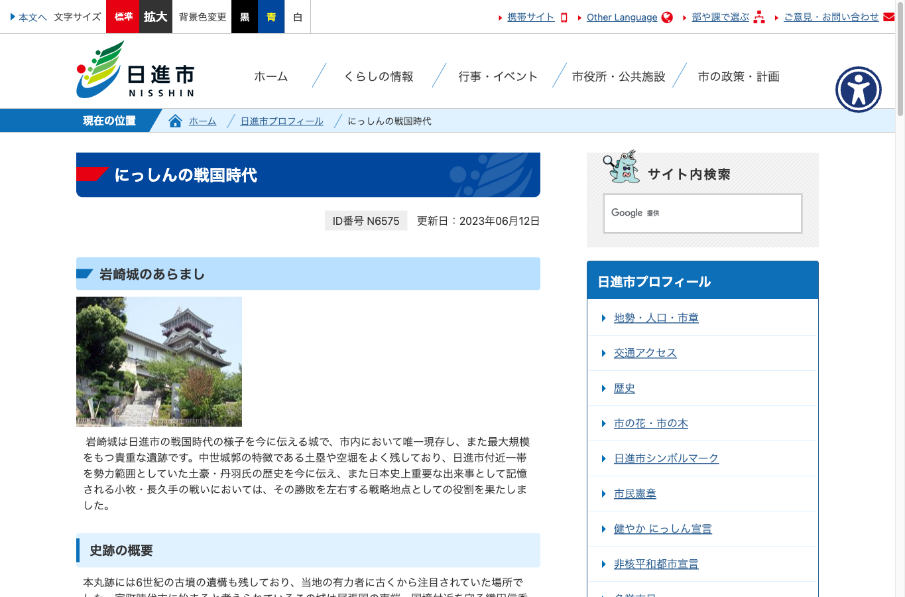
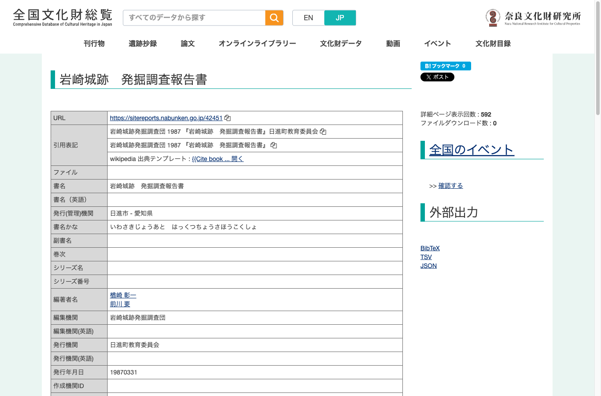
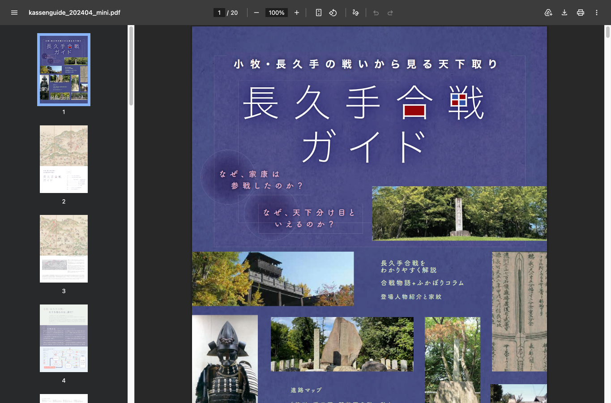
References
このページの再現イラストは、下記資料をもとにした理解用のビジュアルです。個別の建物形状、人物配置、城下の具体的な景観を、一次史料として断定するものではありません。
築城年代、丹羽氏入城時期、城兵数、丹羽氏重の言葉、戦闘時間、家康の評価については資料により表現差があります。映像化では「諸説」「伝承」を明示し、確定史実として断定しない方針です。